Porters
Activity
Manager
Increasing the efficency of soft services management within the NHS hospitals by improving the user experience of the activity manager application
- Client
- Micad
- Year
- 2021
- Made at
- Redouble Agency
- Project Type
- Mobile Native App, Desktop App
- Scope
- Wireframe, UI Design
Micad is the number one property management software used by the NHS, with over 170 NHS Trusts nationwide using its applications.
The efficiency of clinical care is directly impacted by the soft services management. Porters are the heartbeat of NHS hospitals, making sure crucial goods and items are delivered where they are needed most. They also ensure that patients are at the right place at the right time. Micad’s Soft Services app provides a smart way to manage daily portering tasks within a hospital.
The application has two components dedicated to two different categories of users. Always on the go, porters receive and process their daily tasks through a native mobile app. At the same time, the desk clerks log the tasks in the system and assign them to specific porters, using the web desktop app.
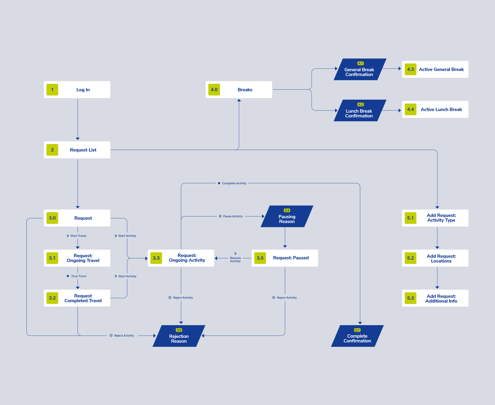
Creating a visual representation of all possible paths was an essential step in the beginning of the process. It helped us visualize the product and define the user goals. We managed to get on the same page internally and with the stakeholders. Acting as a map, the user flow also helped me organize my design process.
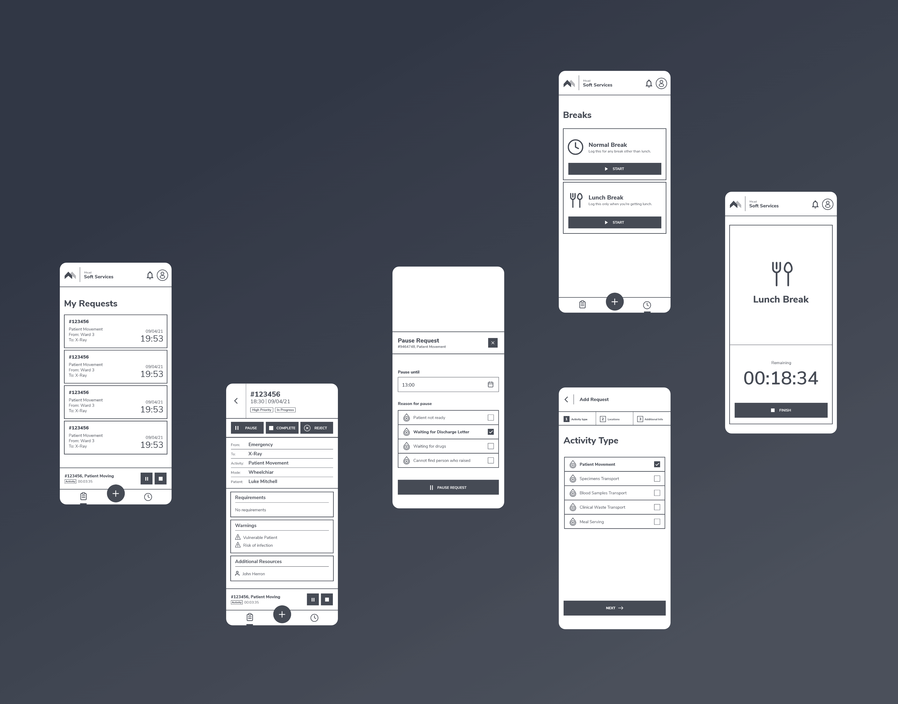
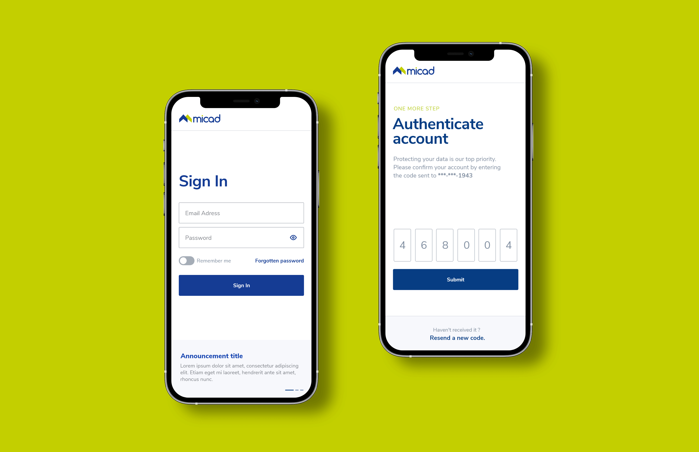
The app provides porters with a personalized board of requests. Always on the go, they need it to be as clear as possible. Sometimes, their schedule could get busy, so they have to multitask. Our goal was to empower porters to easily scan the most important details even when that happens.
Through hierarchy, contrast, whitespace, alignment and grouping of elements, I was able to create the intended path that the user's eye should follow within the request card. The starting time of the request is the most important information, followed by the code identifier.
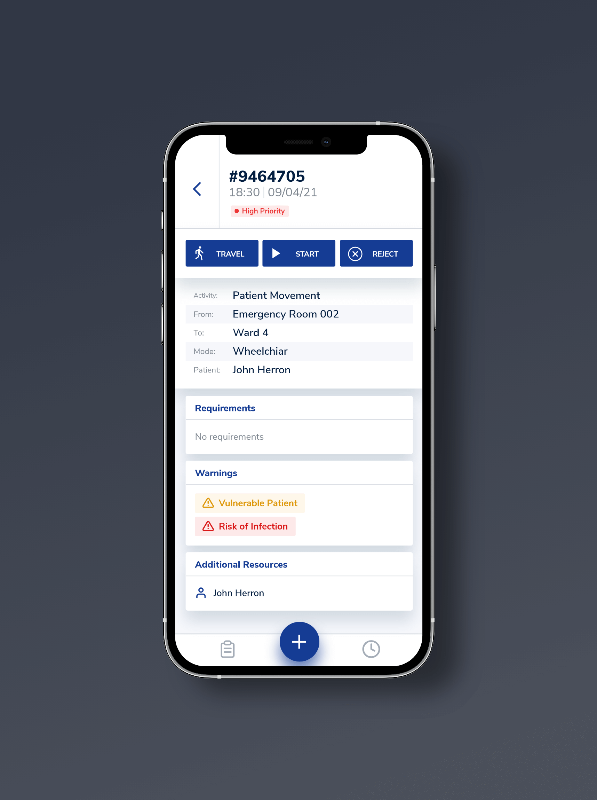
The main task of the porters within the app is to log their activity in real time. On the request screen, they are provided with the necessary details and actions. To start logging the time, they simply use the "start" button. If they have to travel to the starting location of the request, they have to use the "travel" button first.
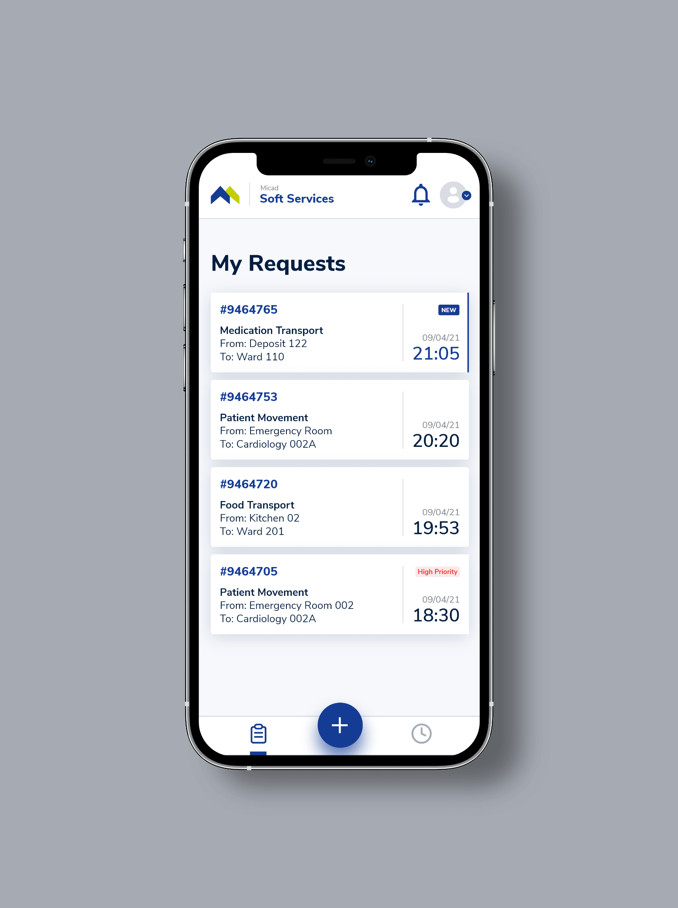
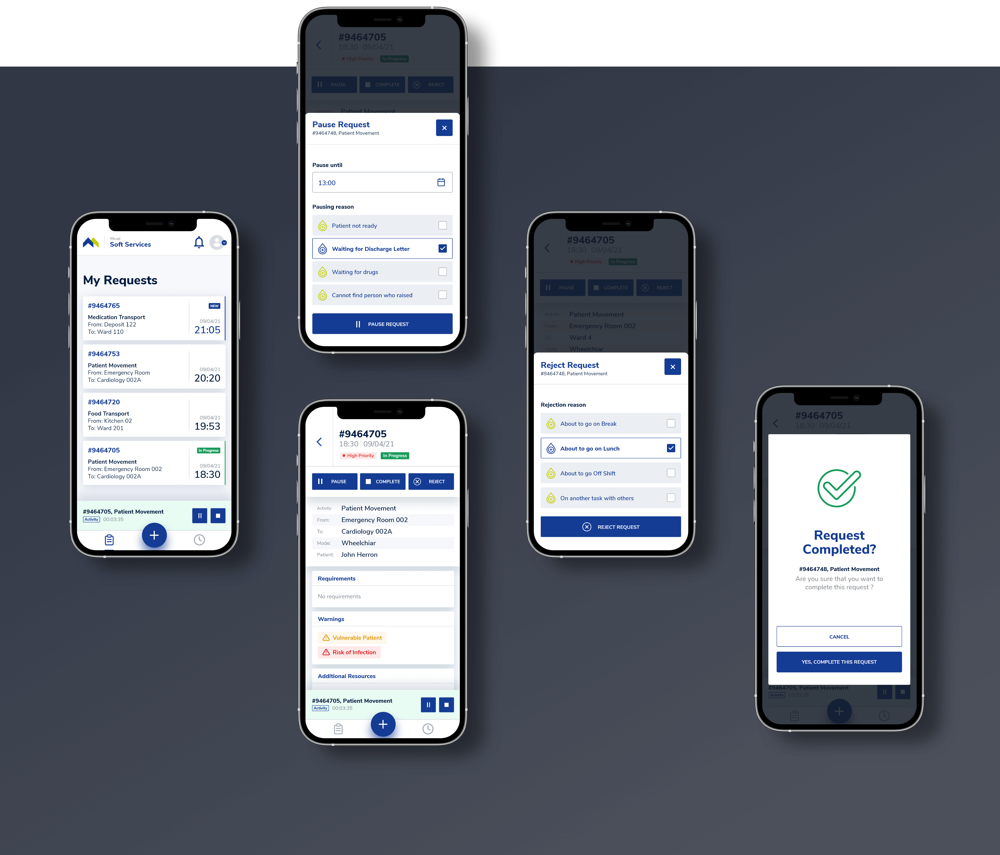
Unexpected events could occur during a workday. To address that, the app allows porters to pause or reject a request. They must offer a reason for these actions, choosing from a predefined list. To maintain the connection between the request and the action, we decided to display these functionalities through modals.
Keeping porters focused on their current task was also important. To achieve that, I designed a timer component that displays the task in progress along with the main actions. It stays fixed at the bottom while the porter navigates through the app.
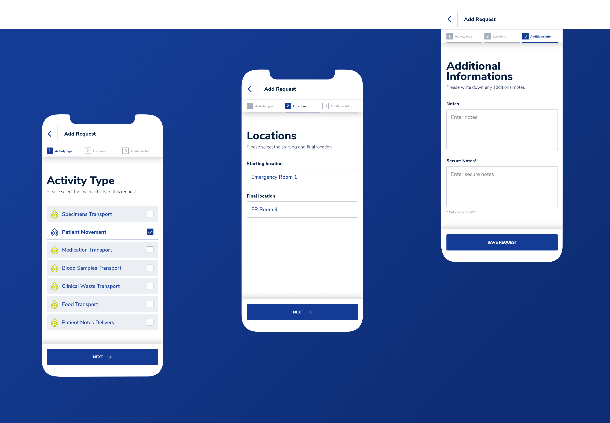
Requests are mostly added through the desktop app. But sometimes, porters need to add them on the go. I designed this functionality with a focus on simplicity. To avoid overwhelming the user, I divided the process into steps and provided inputs only for the most crucial details.
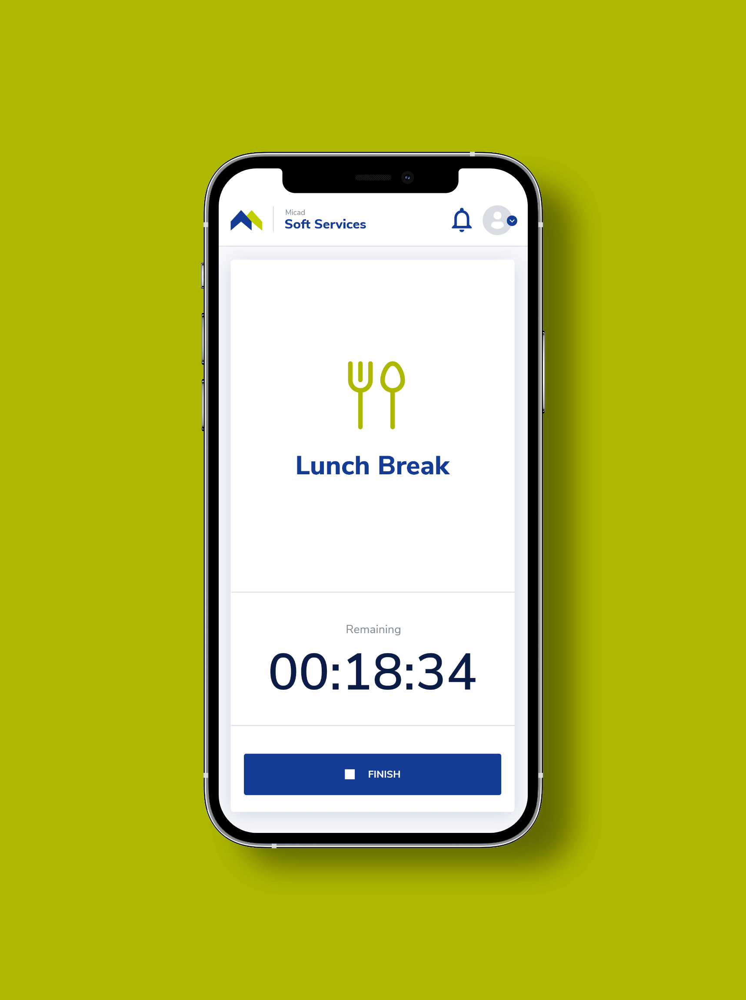
Breaks are the fuel of a productive workday. This screen provides porters with a simple solution to track them. Each type of break has its own dedicated card to allow starting it with a single tap. Micad requested us to disable all functionalities while a break is active. We decided to remove the bottom navigation altogether, maintaining the entire focus of the screen on what’s important.
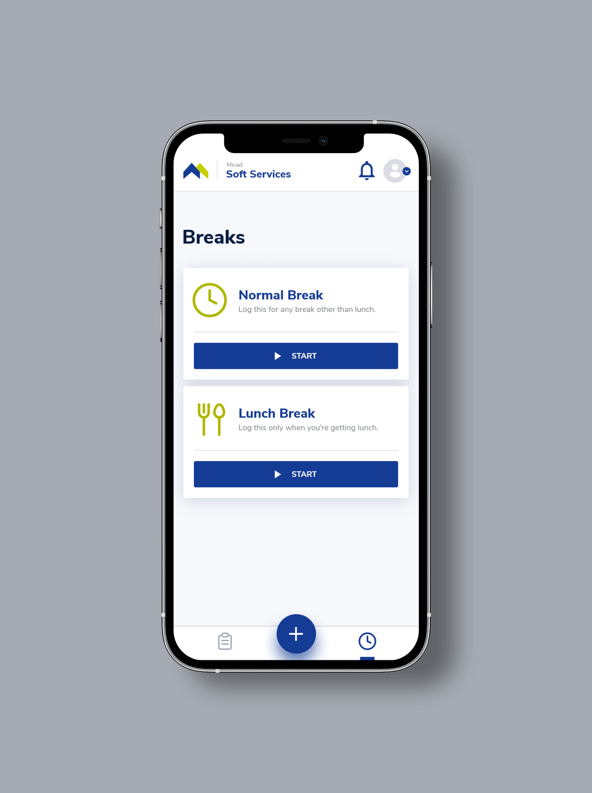
If porters are the heart of the hospital, the desk clerks are the brain. Our goal was to offer them a frictionless experience. Understanding how they work, what they really need, and what they expect was crucial for a successful design.
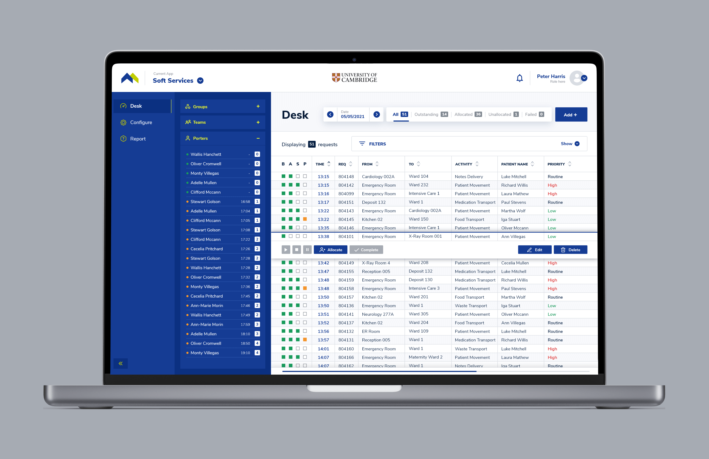
Through user observation, we identified that the most critical task for desk clerks is matching requests with available porters. Each request must be assigned based on specific details and the current workload. To support this process, I introduced clear visual contrast between the request and porter lists, making comparisons quicker and more intuitive.
Given the length of the request list, maximizing screen real estate was essential. I achieved this by collapsing less frequently used filters, while keeping high-use filters—like date and status—easily accessible outside the hidden section. This balance improved both clarity and efficiency.
To further reduce cognitive load, I focused on tying available actions directly to the selected request. I also explored and implemented effective visual cues to highlight the selected item, helping users stay oriented and focused during high-volume tasks.
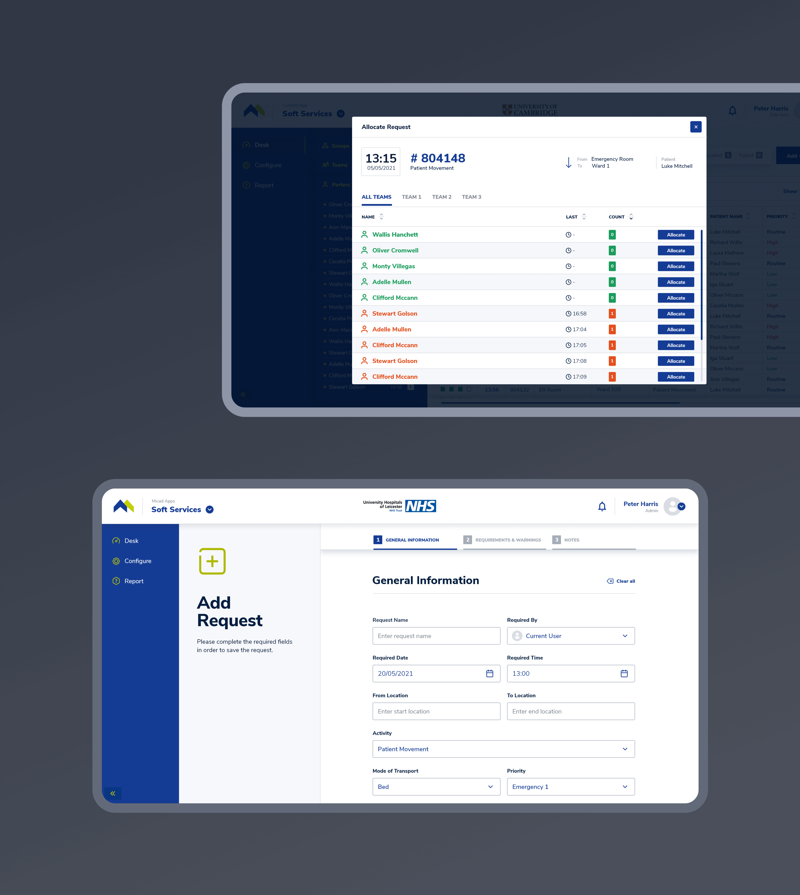
We offered desk clerks the flexibility to use the app in a way that they feel the most productive. To allocate a request, they could use two methods. The first one is by dragging and dropping right on the Desk screen. The second one is by using the Allocate button, which opens a dedicated modal. My goal was to provide clarity. For this reason, I included a summary of the request above the porter list. I also highlighted the workload through the use of different colors for displaying the porters.
To reduce costs, we created the means to scale the design as easy as possible. Because complexity intrigues me, my favorite task was developing the new Micad Design System.
The system provides a single source of truth for designers, developers and stakeholders. It helped us maintain functional and visual consistency during the design process. We also ensured that design changes were propagated between all applications.
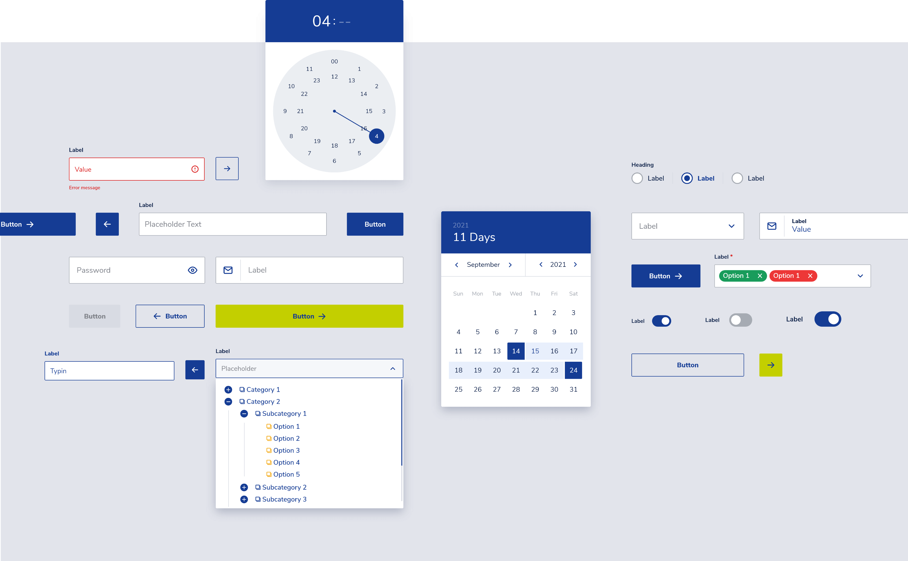
To navigate the complexity of building a design system, I used the Atomic Design methodology. It helped me create all the components in a logical order. In addition, I was careful to build each component with the developer in mind. I took my time to organize all layers and name them accordingly.
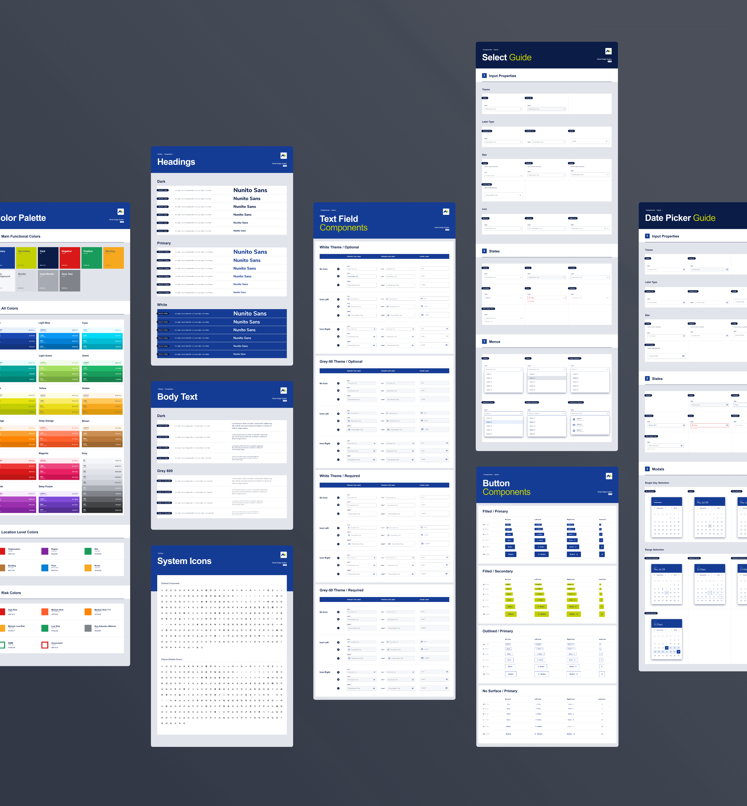
Besides researching, planning and designing the components, I also created a presentation of all component variants, complemented by a guide that describes the properties and the states.